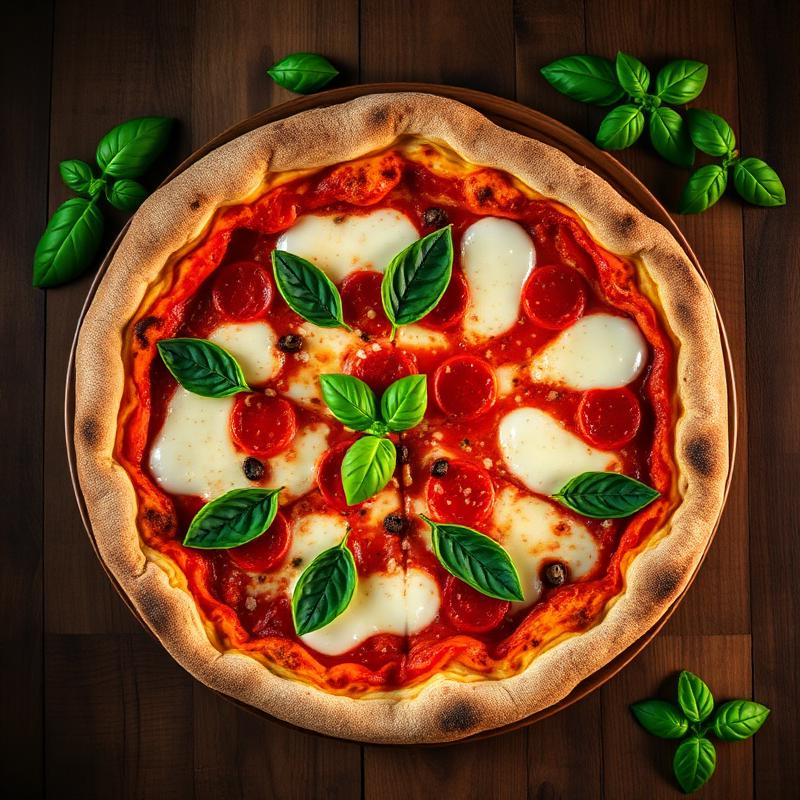

12:48
— Food Blogger & YouTuber
Mangio per voi.
Mangio per voi.
Onestamente.
Recensioni schiette, ironiche e senza filtri dei migliori (e peggiori) ristoranti d'Italia. Una forchetta alla volta.
250+Locali recensiti
1.2MIscritti YouTube
20+Città visitate
scroll ↓